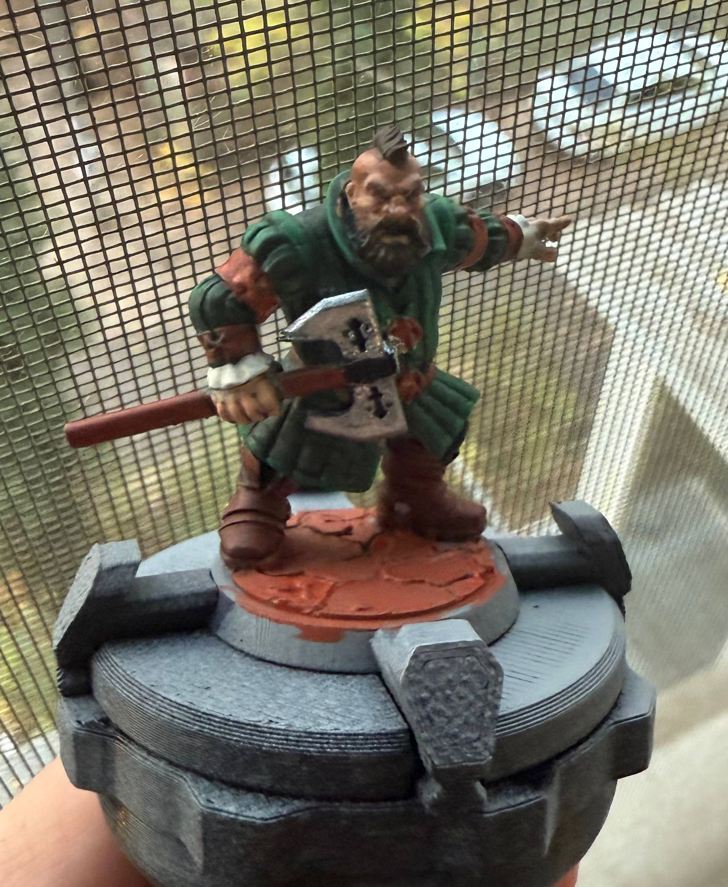
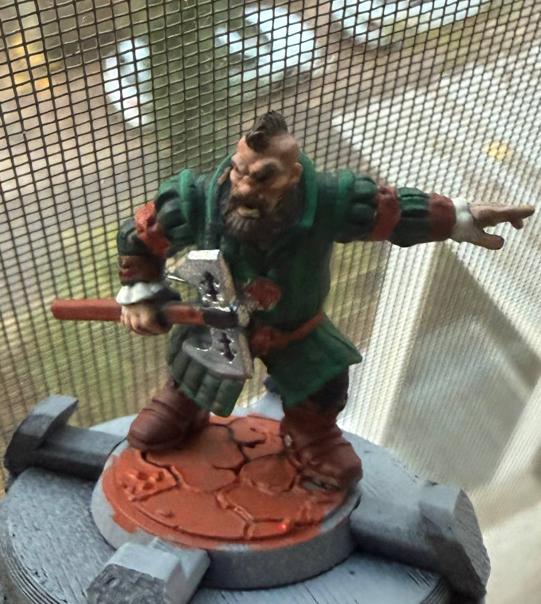

Hobbies
My hobbies form an important part of my personal life, allowing me to combine intellectual engagement, creative expression, and technical development. They reflect my interest in complex systems, attention to detail, and desire to improve skills in diverse areas.
One of my key hobbies is computer games, not only as a form of leisure but also as a space for developing strategic thinking and teamwork. I am most deeply immersed in Dota 2: I regularly practice, analyze game mechanics, study tactics, and follow the professional scene. The experience of participating in a Dota 2 tournament was a significant milestone — it taught me to work under strict time constraints, make quick decisions, and interact effectively with a team. The competitive format revealed weaknesses in my gaming strategy, which prompted me to deliberately work on mistakes and deeply study the meta-game. For me, this is not just entertainment, but a way to train logic, reaction, and the ability to adapt to changing conditions.
Another hobby — miniature painting — is the complete opposite of dynamic gaming, requiring focus, patience, and artistic taste. Working with small details (from 28 mm to 54 mm) develops fine motor skills and teaches an appreciation for color harmony. I am mastering various techniques: from base coating to multi-layer glazing and weathering effects. Each project is a small challenge: I need to choose the right pigments, control layer thickness, and consider lighting to achieve a realistic result. I find it especially interesting to recreate complex textures — metal, fabric, leather. The process takes hours, but the final look of a completed miniature, where every detail is worked out, brings deep satisfaction. This hobby has become a form of meditation for me: it teaches me to slow down, focus on the present moment, and appreciate meticulous work.


The third area — working with PC components — combines technical curiosity and practical utility. I enjoy building and upgrading computers: selecting components with a balance of performance and cost in mind, testing their compatibility, and optimizing cooling systems. The experience of disassembling and assembling PCs has helped me understand device architecture and the principles of hardware-software interaction. I follow market innovations (processors, graphics cards, SSDs), study reviews and benchmarks to make informed decisions when upgrading. Customization is a separate pleasure: installing RGB lighting, choosing cases with transparent panels, cable management with aesthetics in mind. This hobby not only allows me to create powerful workstations for gaming and professional tasks but also develops engineering thinking: I learn to diagnose issues, analyze the causes of failures, and find optimal solutions.